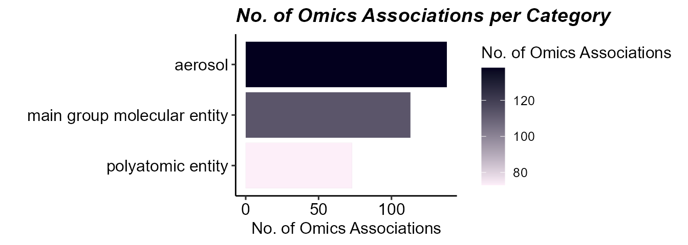

The tidyexposomics package is designed to facilitate the
integration of exposure and omics data to identify exposure-omics
associations and their relevance to health
outcomes.tidyexposomics extends the tidy-Bioconductor
ecosystem (e.g., tidybulk, tidySummarizedExperiment) to exposome
multi-omics integration using the MultiAssayExperiment container. It
provides tidyverse-style accessors and functions for association
testing, multi-omics integration, and ontology-driven enrichment, in an
effort to complement existing tidy-Bioc tools.

tidyexposomics pipeline overview. QC, association testing, integration, and enrichment steps on a MultiAssayExperiment.
Installation
# install the package
BiocManager::install("tidyexposomics")
# load the package
library(tidyexposomics)Command Structure
To make the package more user-friendly, we have named our functions to be more intuitive. For example, we use the following naming conventions:

Command naming conventions used throughout tidyexposomics.
More complex pipelines begin with the run_ prefix,
visualizations with plot_, and data processing with
filter_, transform_, pivot_, or
extract_ prefixes.
We provide functionality to either add results to the existing object
storing the omics/exposure data or to return results directly using
action = "get". We suggest adding results, given that
pipeline steps are tracked and can be output to the R console, plotted
as a workflow diagram, or exported to an Excel worksheet.
Loading Data
To get started we need to load the data. The
create_exposomicset function is used to create a
MultiAssayExperiment object that contains exposure and
omics data. As a quick introduction, a MultiAssayExperiment
object is a container for storing multiple assays (e.g., omics data) and
their associated metadata:

Overview of the MultiAssayExperiment structure linking samples, assays, and metadata.
We use the MultiAssayExperiment object to store the exposure and omics data. The create_expomicset function has several arguments:
codebook: is a data frame that contains information about the variables in the exposure metadata. The column names must contain variable where the values are the column names of the exposure data frame, and category which contains general categories for the variable names. This is the data frame you created with the ontology annotation app!exposure: is a data frame that contains the exposure and other metadata.omics: is a list of data frames that contain the omics data.row_data: argument is a list of data frames that contain information about the rows of each omics data frame.
We are going to start by loading in example data pulled from the ISGlobal Exposome Data Challenge 2021 (Maitre et al., 2022). Specifically, we will examine how exposures and omics features relate to asthma status in asthma patients with a lower socioeconomic status (SES).
# Load Libraries
library(tidyverse)
library(tidyexposomics)
# Load example data
data("tidyexposomics_example")
# Create exposomic set object
expom <- create_exposomicset(
codebook = tidyexposomics_example$annotated_cb,
exposure = tidyexposomics_example$meta,
omics = list(
"Gene Expression" = tidyexposomics_example$exp_filt,
"Methylation" = tidyexposomics_example$methyl_filt
),
row_data = list(
"Gene Expression" = tidyexposomics_example$exp_fdata,
"Methylation" = tidyexposomics_example$methyl_fdata
)
)## Ensuring all omics datasets are matrices with column names.## Creating SummarizedExperiment objects.## Creating MultiAssayExperiment object.## MultiAssayExperiment created successfully.We are interested in how the exposome affects health outcomes, so let’s define which metadata variables represent exposure variables.
# Grab exposure variables
exp_vars <- tidyexposomics_example$annotated_cb |>
filter(category %in% c(
"aerosol",
"main group molecular entity",
"polyatomic entity"
)) |>
pull(variable) |>
as.character()Quality Control
Missingness
Oftentimes when collecting data, there are missing values. Let’s use
the plot_missing function to determine where our missing
values are:
# Plot the missingness summary
plot_missing(
exposomicset = expom,
plot_type = "summary",
threshold = 0
)
Count of features with missing data above a 0% missingness threshold by data layer. Exposure data have variables with missingness.
Here we see that there are 4 variables in the exposure data that are missing data. Let’s take a look at them:
# Plot missing variables withing exposure group
plot_missing(
exposomicset = expom,
plot_type = "lollipop",
threshold = 0,
layers = "Exposure"
)
Percent missingness per exposure variable. Parity,
h_parity_None, shows the highest missingness.
Here we see that one variable, h_parity_None, has about
4% missing values. We can apply a missingness filter using the
filter_missing function. However, given that this level of
missingness is quite low, we will not be applying a missingness filter
and instead impute the missing data.
Imputation
The run_impute_missing function is used to impute
missing values. Here we can specify the imputation method for exposure
and omics data separately.
The exposure_impute_method argument is used to set the
imputation method for exposure data, and the
omics_impute_method argument is used to set the imputation
method for omics data. The omics_to_impute argument is used
to specify which omics data to impute. Here we will impute the exposure
data given using the missforest method, but other options
for imputation methods include:
median: Imputes missing values with the median of the variable.mean: Imputes missing values with the mean of the variable.knn: Uses k-nearest neighbors to impute missing values.mice: Uses the Multivariate Imputation by Chained Equations (MICE) method to impute missing values.missforest: Uses the MissForest method to impute missing values.lod_sqrt2: Imputes missing values using the square root of the lower limit of detection (LOD) for each variable. This is useful for variables that have a lower limit of detection, such as chemical exposures.
# Impute missing values
expom <- run_impute_missing(
exposomicset = expom,
exposure_impute_method = "missforest",
exposure_cols = exp_vars
)## Imputing exposure data using method: missforestFiltering Omics Features
We can filter omics features based on variance or expression levels.
The filter_omics function is used to filter omics features.
The method argument is used to set the method for filtering. Here we can
use either:
Variance: Filters features based on variance. We recommend this for omics based on continuous measurements, such as log-transformed counts, M-values, protein intensities, or metabolite concentrations.
Expression: Filters features based on expression levels. We recommend this for omics where many values may be near-zero or zero, such as RNA-seq data.
The assays argument is used to specify which omics data
to filter. The assay_name argument is used to specify which
assay to filter. The min_var, min_value, and
min_prop arguments are used to set the minimum variance,
minimum expression value, and minimum proportion of samples exceeding
the minimum value, respectively.
# filter omics layers by variance and expression
# Methylation filtering
expom <- filter_omics(
exposomicset = expom,
method = "variance",
assays = "Methylation",
assay_name = 1,
min_var = 0.05
)## Filtering assay: Methylation## Filtered 223 of 500 features from 'Methylation' using method 'variance'
# Gene expression filtering
expom <- filter_omics(
exposomicset = expom,
method = "expression",
assays = "Gene Expression",
assay_name = 1,
min_value = 1,
min_prop = 0.3
)## Filtering assay: Gene Expression## Filtered 29 of 500 features from 'Gene Expression' using method 'expression'Normality Check
When determining variable associations, it is important to check the
normality of the data. The run_normality_check function is
used to check the normality of the data.
# Check variable normality
expom <- run_normality_check(
exposomicset = expom,
action = "add"
)## Checking Normality Using Shapiro-Wilk Test## 9 Exposure Variables are Normally Distributed## 6 Exposure Variables are NOT Normally DistributedThe transform_exposure function is used to transform the
data to make it more normal. Here the transform_method is set to
boxcox_best as it will automatically select the best
transformation method based on the data. The
transform_method can be manually set to log2,
sqrt, or x_1_3 as well. We specify the
exposure_cols argument to set the columns to transform.
# Transform variables
expom <- transform_exposure(
exposomicset = expom,
transform_method = "boxcox_best",
exposure_cols = exp_vars
)## Applying the boxcox_best transformation.To check the normality of the exposure data, we can use the
plot_normality_summary function. This function plots the
normality of the data before and after transformation. The
transformed argument is set to TRUE to plot
the normality status of the transformed data.
# Examine normality summary
plot_normality_summary(
exposomicset = expom,
transformed = TRUE
)
Normality status of numeric exposure variables after Box-Cox transformation.
Principal Component Analysis
To identify the variability of the data, we can perform a principal
component analysis (PCA). The run_pca performs a joint PCA
across all numeric exposures and omic assays after standardization,
identifying shared axes of variation across layers. The resulting PCs in
colData() reflect integrated sample-level variance across
all data types, and outliers are defined in that joint multi-omics PC
space.
Here we specify that we would like to log-transform the exposure and
omics data before performing PCA using the log_trans_exp
and the log_trans_omics arguments, respectively. We
automatically identify sample outliers based on the Mahalanobis
distance, a measure of the distance between a point and a
distribution.
# Perform principal component analysis
expom <- run_pca(
exposomicset = expom,
log_trans_exp = TRUE,
log_trans_omics = TRUE,
action = "add"
)## Identifying common samples.## Subsetting exposure data.## Subsetting omics data.## Performing PCA on Feature Space.## Performing PCA on Sample Space.## Outliers detected: s1231
# Plot the PCA plot of sample and feature space
plot_pca(exposomicset = expom)
PCA of sample and feature space with sample outlier detection.
Here we see one sample outlier, and that most variation is captured
in the first two principal components for both features and samples. We
can filter out the outlier using the filter_sample_outliers
function.
# Filter out sample outliers
expom <- filter_sample_outliers(
exposomicset = expom,
outliers = c("s1231")
)## Removing outliers: s1231To understand the relationship between the principal components and
exposures we can correlate them using the run_correlation
function. Here we specify that the feature_type is
pcs for principal components, specify a set of exposure
variables, exp_vars, and the number of principal
components, n_pcs. We set correlation_cutoff
to 0 and pval_cutoff to 1 to
initially include all correlations.
# Run the correlation analysis
expom <- run_correlation(
exposomicset = expom,
feature_type = "pcs",
exposure_cols = exp_vars,
n_pcs = 20,
action = "add",
correlation_cutoff = 0,
pval_cutoff = 1
)We can visualize these correlations with the
plot_correlation_tile function. We specify we are plotting
the feature_type of pcs to grab the principal
component correlation results. We then set the significance threshold to
0.05 with the pval_cutoff argument.
# Plot the correlation tile plot
plot_correlation_tile(
exposomicset = expom,
feature_type = "pcs",
pval_cutoff = 0.05
)
Correlation heatmap of exposures versus principal components. Child lead
levels (hs_pb_c_Log2) and maternal BPA levels
(hs_bpa_madj_Log2) are associated with the most principal
components.
Exposure Summary
We can summarize the exposure data using the
run_summarize_exposures function. This function calculates
summary statistics for each exposure variable, including the number of
values, number of missing values, minimum, maximum, range, sum, median,
mean, standard error, and confidence intervals. The
exposure_cols argument determines which variables to
include in the summary.
# Summarize exposure data
run_summarize_exposures(
exposomicset = expom,
action = "get",
exposure_cols = exp_vars
) |>
head()## # A tibble: 6 × 27
## variable n_values n_na min max range sum median mean se ci_lower
## <chr> <dbl> <dbl> <dbl> <dbl> <dbl> <dbl> <dbl> <dbl> <dbl> <dbl>
## 1 h_pm10_ra… 47 0 16.6 25.8 9.25 989. 21.2 21.0 0.32 20.4
## 2 h_pm25_ra… 47 0 10.6 18.2 7.55 697. 14.6 14.8 0.25 14.3
## 3 hs_bpa_ma… 47 0 0 2.31 2.31 71.3 1.58 1.52 0.06 1.41
## 4 hs_mibp_c… 47 0 0.1 0.22 0.11 7.65 0.17 0.16 0 0.16
## 5 hs_pb_c_L… 47 0 1.44 5 3.56 156. 3.31 3.31 0.11 3.1
## 6 hs_pfhxs_… 47 0 0 2.14 2.13 65.7 1.48 1.4 0.07 1.25
## # ℹ 16 more variables: ci_upper <dbl>, variance <dbl>, sd <dbl>,
## # coef_var <dbl>, period <chr>, location <chr>, description <chr>,
## # var_type <chr>, transformation <chr>, selected_ontology_label <chr>,
## # selected_ontology_id <chr>, root_id <chr>, root_label <chr>,
## # category <chr>, category_source <chr>, transformation_applied <chr>Exposure Visualization
To visualize our exposure data, we can use the
plot_exposures function. This function allows us to plot
the exposure data in a variety of ways. Here we will plot the exposure
data using a boxplot. The exposure_cat argument is used to
set the exposure category to plot. Additionally, we could specify
exposure_cols to only plot certain exposures. The
plot_type argument is used to set the type of plot to
create. Here we use a boxplot, but we could also use a ridge plot.
# Plot aerosol exposure distributions by sex
plot_exposures(
exposomicset = expom,
group_by = "e3_sex_None",
exposure_cat = "aerosol",
plot_type = "boxplot",
ylab = "Values",
title = "Aerosol Exposure by Sex"
)
Distribution of aerosol exposures by sex.
Here we do not see any significant differences in aerosol exposure between males and females.
Sample-Exposure Association
Sample Clustering
The run_cluster_samples function is used to cluster
samples based on the exposure data, clustering approaches are available
by setting the clustering_approach argument. Here we use
the dynamic approach, which uses a dynamic tree cut method
to identify clusters. Other options are:
gap: Gap statistic method (default); estimates optimalkby comparing within-cluster dispersion to that of reference data.diana: Divisive hierarchical clustering (DIANA); chooseskbased on the largest drop in dendrogram height.elbow: Elbow method; detects the point of maximum curvature in within-cluster sum of squares (WSS) to determinek.dynamic: Dynamic tree cut; adaptively detects clusters from a dendrogram structure without needing to predefinek.density: Density-based clustering (viadensityClust); identifies clusters based on local density peaks in distance space.
# Sample clustering
expom <- run_cluster_samples(
exposomicset = expom,
exposure_cols = exp_vars,
clustering_approach = "dynamic",
action = "add"
)## Starting clustering analysis...## ..cutHeight not given, setting it to 40.7 ===> 99% of the (truncated) height range in dendro.
## ..done.## Optimal number of clusters for samples: 2We plot the sample clusters using the
plot_sample_clusters function. This function plots z-scored
values of the exposure data for each sample, colored by the cluster
assignment. The exposure_cols argument is used to set the
columns to plot.
# Plot the sample clusters
plot_sample_clusters(
exposomicset = expom,
exposure_cols = exp_vars
)## tidyHeatmap says: If you use tidyHeatmap for scientific research, please cite: Mangiola, S. and Papenfuss, A.T., 2020. 'tidyHeatmap: an R package for modular heatmap production based on tidy principles.' Journal of Open Source Software. doi:10.21105/joss.02472.
## This message is displayed once per session.## Warning: `when()` was deprecated in purrr 1.0.0.
## ℹ Please use `if` instead.
## ℹ The deprecated feature was likely used in the tidyHeatmap package.
## Please report the issue at
## <https://github.com/stemangiola/tidyHeatmap/issues>.
## This warning is displayed once per session.
## Call `lifecycle::last_lifecycle_warnings()` to see where this warning was
## generated.
Sample clustering heatmap using exposure profiles (z-scored). Clusters appear mostly driven by aerosol exposure during pregnancy.
Here we see two clusters, largely driven by particulate
matter/aerosol exposure during pregnancy
(h_pm25_ratio_preg_None and
h_pm10_ratio_preg_None).
Exposure Correlations
The run_correlation function identifies correlations
between exposure variables. We set feature_type to
exposures to focus on exposure variables and use a
correlation cutoff of 0.3 to filter for meaningful
associations. This cutoff can be adjusted based on your data and
analysis needs.
# Run correlation analysis
expom <- run_correlation(
exposomicset = expom,
feature_type = "exposures",
action = "add",
exposure_cols = exp_vars,
correlation_cutoff = 0.3
)To visualize the exposure correlations, we can use the
plot_circos_correlation function. Here we will plot the
circos plot. This function creates a circular plot of the exposure
correlations. The correlation_cutoff argument is used to
set the minimum correlation score for the association. Here we use a
cutoff of 0.3.
# Plot exposure correlation circos plot
plot_circos_correlation(
exposomicset = expom,
feature_type = "exposures",
corr_threshold = 0.3,
exposure_cols = exp_vars
)
Circos view of exposure-exposure correlations (threshold 0.3).
Exposure-wide association (ExWAS)
The run_association function performs an ExWAS analysis
to identify associations between exposures and outcomes. We specify the
data source, outcome variable, feature set, and covariates for the
analysis. Since we have a binary outcome, we set the model family to
binomial.
# Perform ExWAS
expom <- run_association(
exposomicset = expom,
source = "exposures",
outcome = "hs_asthma",
feature_set = exp_vars,
action = "add",
family = "binomial"
)## Running GLMs.To visualize the results of the ExWAS analysis, we can use the
plot_association function, which will plot results for the
the specified features. The terms argument is used to set
the features to plot. The filter_thresh argument is used to
set the threshold for filtering the results. The filter_col
argument is used to set the column to filter on. Here we use
p.value to filter on the p-value of the association. We can
also include the R^2 or adjusted R^2 (if covariates are included) using
the r2_col argument.
# Plot the association forest plot
plot_association(
exposomicset = expom,
source = "exposures",
terms = exp_vars,
filter_thresh = 0.05,
filter_col = "p.value",
r2_col = "r2"
)
ExWAS associations of exposures with asthma status. No exposures are significantly associated (P < 0.05) with asthma status.
Here we see that no exposure variables are significantly associated
with our asthma status. Although we do see that confidence interval for
child Mono-iso-butyl phthalate (MiBP) levels
(hs_mibp_cadj_Log2) does not cross 0, indicating a
negative, albeit not significant (P < 0.05) association.
We can also associate our omics features with an outcome of interest
using the run_association function. Here we specify an
additional argument, top_n, which is used to set the top
number of high variance omics features to include per omics layer.
# Perform ExWAS
expom <- run_association(
exposomicset = expom,
outcome = "hs_asthma",
source = "omics",
top_n = 500,
action = "add",
family = "binomial"
)## Log2-Transforming each assay in MultiAssayExperiment.## Scaling each assay in MultiAssayExperiment.## Running GLMs.Now we can visualize these results with a manhattan plot.
# Plot the manhattan plot
plot_manhattan(
exposomicset = expom,
min_per_cat = 0,
feature_col = "feature_clean",
vars_to_label = c(
"TC19001180.hg.1",
"TC01000565.hg.1",
"cg01937701",
"hs_mibp_cadj_Log2"
),
panel_sizes = c(1, 3, 1, 3, 1, 1, 1),
facet_angle = 0
)
Manhattan plot of omics-wide associations with asthma status.
Differential Abundance
Differential Abundance
We provide functionality to test for differentially abundant features
associated with an outcome across multiple omics layers. This is done
using the run_differential_abundance function, which fits a
model defined by the user (using the formula argument) and
supports several methods. Here we apply the limma_trend
method, a widely used approach for analyzing omics data. Users can also
specify how features are scaled (e.g. none, quantile, TMM) before
fitting.
# Run differential abundance analysis
expom <- run_differential_abundance(
exposomicset = expom,
formula = ~hs_asthma,
method = "limma_trend",
scaling_method = "none",
action = "add"
)## Running differential abundance testing.## Processing assay: Gene Expression## Processing assay: Methylation## Differential abundance testing completed.We can summarize the results of the differential abundance analysis
with a volcano plot, which highlights features with a high log fold
change and that are statistically significant. The
plot_volcano function generates this visualization, with
options to set thresholds for p-values and log fold changes, and to
label a subset of top-ranked features. In this example, we use the
feature_clean column to display interpretable feature
names.
Note: we set the pval_col to
P.Value for the purposes of this example, but we recommend
keeping the default of adj.P.Val to use the adjusted
p-values.
# Plot the volcano plot
plot_volcano(
exposomicset = expom,
top_n_label = 3,
feature_col = "feature_clean",
logFC_thresh = log2(1),
pval_thresh = 0.05,
pval_col = "P.Value",
logFC_col = "logFC",
nrow = 1
)
Volcano plot of differentially abundant features across omics layers.
Exposure-Omics Association
Exposure-Omics Association
Above we saw that there are not too many omics features associated with asthma. Which may be due to the subsampling in this example or because exposures are driving different biology. Let’s examine what omics features exposures are associated with.
# Run association testing between every exposure and omics feature
expom <- run_exposure_omics_association(
exposomicset = expom,
exposures = exp_vars,
action = "add"
)## Testing 9 exposures across 2 assays## Processing assay: Gene Expression## Processing assay: MethylationNow let’s see how many omics features each exposure is associated
with using the plot_exposure_omics_association function
where we can either plot by the individual exposure or exposure
category:
# Plot the number of exposure-omics associations
plot_exposure_omics_association(
exposomicset = expom,
plot_type = "category",
pval_col = "p.value",
pval_thresh = 0.05)
Barplot of the number of omics features associated with exposures.
Here we can see that there are omics features associated with exposures, while there are fewer that are associated with asthma directly.
Enrichment Analysis
Enrichment analysis tests whether a set of molecular features
(e.g. differentially abundant genes, metabolites, etc.) is
over-represented in a predefined biological process. The benefit of
grouping our exposures into categories is that we can now determine how
broad categories of exposures are tied to biological processes. The
run_enrichment function can perform enrichment analysis on
the following feature types:
degs: Differentially abundant features.degs_robust: Robust differentially abundant features from the sensitivity analysis.omics: User chosen features.factor_features: Multi-omics factor features either fromfactor_type = “common_top_factor_features”or“top_factor_features”.degs_cor: Differentially abundant features correlated with a set of exposures.omics_cor: User chosen features correlated with a set of exposures.factor_features_cor: Multi-omics factor features correlated with a set of exposures.
Here we will run enrichment analysis on omics features associated
with exposures. Specifically, we will grab omics features assoicated
with aerosols using the extract_results function. This
function allows us to pull any of the results we have been generating so
far. We will then filter these association results to significant
associations (p-value < 0.05) and those with the
category “aerosol”.
# Extract omics features associated with aerosols
var_map <- extract_results(
exposomicset = expom,
result = "association"
) |>
pluck("exposure_omics",
"results_df") |>
filter(p.value<0.05) |>
filter(category == "aerosol") |>
dplyr::select(
exp_name = exp_name,
variable = feature
)Now we will perform enrichment analysis and specify
feature_col to represent the column in our feature metadata
with IDs that can be mapped (i.e. gene names). We will be performing
Gene ontology enrichment powered by the fenr
package (Fenr, 2025). Note that we specify a
clustering_approach. This will cluster our enrichment terms
by the molecular feature overlap.
# Run enrichment analysis on factor features correlated with exposures
expom <- run_enrichment(
exposomicset = expom,
variable_map = var_map,
feature_type = "omics",
feature_col = "feature_clean",
db = c("GO"),
species = "goa_human",
fenr_col = "gene_symbol",
padj_method = "none",
pval_thresh = 0.1,
min_set = 1,
max_set = 800,
clustering_approach = "diana",
action = "add"
)## Determining Number of GO Term Clusters...## Optimal number of clusters for samples: 17Enrichment Visualizations
To visualize our enrichment results we provide several options:
dot`plot: A dot plot showing the top enriched terms. The size of the dots represents the number of features associated with the term, while the color represents the significance of the term.
cnet: A network plot showing the relationship between features and enriched terms.network: A network plot showing the relationship between enriched terms.heatmap: A heatmap showing the relationship between features and enriched terms.summary: A summary figure of the enrichment results.
Enrichment Summary
To summarize the enrichment results, we can use the
plot_enrichment function with the plot_type
argument set to summary. This will plot a summary of the
enrichment results, showing:
The number of exposure categories per enrichment term group.
The number of features driving the enrichment term group.
A p-value distribution of the enrichment term group.
The number of terms in the enrichment term group.
The total number of terms per experiment name.
The overlap in enrichment terms between experiments (i.e. between gene expression and methylation).
# Plot the summary diagram
plot_enrichment(
exposomicset = expom,
feature_type = "omics",
plot_type = "summary"
)## Picking joint bandwidth of 0.25
Summary of enriched GO terms grouped by overlap and exposure category.
Here we see that it is just the features associated with “polyatomic entity” exposures that seem to be enriched. Additionally, there appears to be no overlap in terms between methylation and gene expression results.
DotPlot
By setting the plot_type to dotplot we can create a
dotplot to show which omics are associated with which terms. By
specifying the top_n_genes we can add the most frequent
features in that particular enrichment term group.
# Plot a dotplot of terms
plot_enrichment(
exposomicset = expom,
feature_type = "omics",
plot_type = "dotplot",
top_n = 15,
add_top_genes = TRUE,
top_n_genes = 5
)
Dotplot of top enriched GO terms by omics layer and exposure category.
Term Network Plot
We can set the plot_type to network to
understand how our enrichment terms are individually connected.
# Plot the term network plot
# Setting a seed so that the plot layout is consistent
set.seed(42)
plot_enrichment(
exposomicset = expom,
feature_type = "omics",
plot_type = "network",
label_top_n = 3
)
Network of enriched GO terms connected by shared genes.
At the individual term level, we see that they differ by omics layer, with the gene expression driving terms related to vesicle traficking and the methylation data driving terms related to G protein-coupled receptor signaling.
Heatmap
Setting the plot_type to heatmap can help
us understand which genes are driving the enrichment terms. We have the
additional benefit of being able to color our tiles by the Log_2_Fold
Change from our differential abundance testing. Here we will examine
group 2, given it seems to be driven by the most terms and multiple
omics layers.
# Plot a heatmap of genes and corresponding GO terms
plot_enrichment(
exposomicset = expom,
feature_type = "omics",
go_groups = "Group 2",
plot_type = "heatmap",
heatmap_fill = TRUE,
feature_col = "feature_clean"
)
Heatmap of genes driving enriched GO terms (Group 2) with log2 fold-change overlay.
Cnet Plot
Another way to visualize this information is with the
cnet plot, where the enrichment terms are connected to the
genes driving them.
# Plot the gene-term network
# Setting a seed so that the plot layout is consistent
set.seed(42)
plot_enrichment(
exposomicset = expom,
feature_type = "omics",
go_groups = "Group 2",
plot_type = "cnet",
feature_col = "feature_clean"
)
Cnet plot linking enriched terms to contributing genes (Group 1).
Pipeline Summary
To summarize the steps we have taken in this analysis, we can use the
run_pipeline_summary function. This function will provide a
summary of the steps taken in the analysis. We can set
console_print to TRUE to print the summary to
the console. Setting include_notes to TRUE
will include notes on the steps taken in the analysis.
# Run the pipeline summary
expom |>
run_pipeline_summary(console_print = TRUE, include_notes = TRUE)## 1. run_impute_missing -
## 2. filter_omics_Methylation - Filtered omics features from 'Methylation'
## Using method = 'variance': 223 removed of 500 (44.6%).
## 3. filter_omics_Gene Expression - Filtered omics features from 'Gene Expression'
## Using method = 'expression': 29 removed of 500 (5.8%).
## 4. run_normality_check - Assessed normality of 15 numeric exposure variables. 9 were normally distributed (p > 0.05), 6 were not.
## 5. transform_exposure - Applied 'boxcox_best' transformation to 9 exposure variables. 5 passed normality (Shapiro-Wilk p > 0.05, 55.6%).
## 6. run_pca - Outliers: s1231
## 7. filter_sample_outliers - Outliers: s1231
## 8. run_correlation_pcs - Correlated pcs features with exposures.
## 9. run_cluster_samples - Optimal number of clusters for samples: 2
## 10. run_correlation_exposures - Correlated exposures features with exposures.
## 11. run_association - Performed association analysis using source: exposures
## 12. run_association - Performed association analysis using source: exposures
## 13. run_differential_abundance - Performed differential abundance analysis across all assays.
## 14. run_exposure_omics_association - Tested 9 exposures against 2 assays using limma-trend
## 15. run_enrichment - Performed GO enrichment on omics features.Saving Results
We can export the results in our MultiAssayExperiment to
an Excel spreadsheet using the extract_results_excel
function. Here we add all of our results to the Excel file, but we can
choose certain results by changing the result_types
argument.
# Save results
extract_results_excel(
exposomicset = expom,
file = tempfile(),
result_types = "all"
)## Writing Correlation Results.## Writing Association Results.## Writing Mixture Analysis Results.## Writing Differential Abundance Results.## Writing Multiomics Integration Results.## Writing Network Impact Results.## Writing Enrichment Results.## Writing Pipeline Summary.## Writing Exposure Summary Results.## Results written to: C:\Users\Jason\AppData\Local\Temp\Rtmpm4HeXO\file379028202b42Session Info
See Session Info
sessionInfo()
## R version 4.5.1 (2025-06-13 ucrt)
## Platform: x86_64-w64-mingw32/x64
## Running under: Windows 11 x64 (build 26200)
##
## Matrix products: default
## LAPACK version 3.12.1
##
## locale:
## [1] LC_COLLATE=English_United States.utf8
## [2] LC_CTYPE=English_United States.utf8
## [3] LC_MONETARY=English_United States.utf8
## [4] LC_NUMERIC=C
## [5] LC_TIME=English_United States.utf8
##
## time zone: America/New_York
## tzcode source: internal
##
## attached base packages:
## [1] stats4 stats graphics grDevices utils datasets methods
## [8] base
##
## other attached packages:
## [1] tidyexposomics_0.99.16 MultiAssayExperiment_1.36.1
## [3] SummarizedExperiment_1.40.0 Biobase_2.70.0
## [5] GenomicRanges_1.62.1 Seqinfo_1.0.0
## [7] IRanges_2.44.0 S4Vectors_0.48.0
## [9] BiocGenerics_0.56.0 generics_0.1.4
## [11] MatrixGenerics_1.22.0 matrixStats_1.5.0
## [13] lubridate_1.9.5 forcats_1.0.1
## [15] stringr_1.6.0 dplyr_1.1.4
## [17] purrr_1.2.0 readr_2.2.0
## [19] tidyr_1.3.2 tibble_3.3.0
## [21] ggplot2_4.0.2 tidyverse_2.0.0
## [23] BiocStyle_2.38.0
##
## loaded via a namespace (and not attached):
## [1] fs_2.1.0 naniar_1.1.0 httr_1.4.8
## [4] RColorBrewer_1.1-3 doParallel_1.0.17 ggsci_4.2.0
## [7] dynamicTreeCut_1.63-1 tools_4.5.1 doRNG_1.8.6.3
## [10] backports_1.5.0 utf8_1.2.6 R6_2.6.1
## [13] DT_0.34.0 GetoptLong_1.1.0 withr_3.0.2
## [16] gridExtra_2.3 cli_3.6.5 textshaping_1.0.4
## [19] factoextra_2.0.0 Cairo_1.7-0 RGCCA_3.0.3
## [22] labeling_0.4.3 sass_0.4.10 S7_0.2.1
## [25] randomForest_4.7-1.2 ggridges_0.5.7 pkgdown_2.2.0
## [28] systemfonts_1.3.2 foreign_0.8-90 parallelly_1.46.1
## [31] itertools_0.1-3 limma_3.66.0 rstudioapi_0.18.0
## [34] RSQLite_2.4.6 FNN_1.1.4.1 shape_1.4.6.1
## [37] vroom_1.7.0 zip_2.3.3 dendextend_1.19.1
## [40] car_3.1-5 Matrix_1.7-4 abind_1.4-8
## [43] lifecycle_1.0.5 edgeR_4.8.2 yaml_2.3.12
## [46] carData_3.0-6 recipes_1.3.1 SparseArray_1.10.8
## [49] BiocFileCache_3.0.0 Rtsne_0.17 grid_4.5.1
## [52] blob_1.3.0 promises_1.5.0 crayon_1.5.3
## [55] lattice_0.22-7 magick_2.9.1 pillar_1.11.1
## [58] knitr_1.51 ComplexHeatmap_2.26.1 rjson_0.2.23
## [61] corpcor_1.6.10 future.apply_1.20.2 mixOmics_6.34.0
## [64] codetools_0.2-20 glue_1.8.0 ggvenn_0.1.19
## [67] data.table_1.18.2.1 vctrs_0.6.5 png_0.1-8
## [70] Rdpack_2.6.6 gtable_0.3.6 assertthat_0.2.1
## [73] cachem_1.1.0 openxlsx_4.2.8.1 gower_1.0.2
## [76] xfun_0.54 rbibutils_2.4.1 S4Arrays_1.10.1
## [79] mime_0.13 prodlim_2025.04.28 tidygraph_1.3.1
## [82] survival_3.8-3 timeDate_4052.112 iterators_1.0.14
## [85] hardhat_1.4.2 lava_1.8.2 statmod_1.5.1
## [88] ipred_0.9-15 nlme_3.1-168 fenr_1.8.1
## [91] bit64_4.6.0-1 filelock_1.0.3 bslib_0.10.0
## [94] Deriv_4.2.0 otel_0.2.0 rpart_4.1.24
## [97] colorspace_2.1-2 DBI_1.3.0 Hmisc_5.2-5
## [100] nnet_7.3-20 tidyselect_1.2.1 bit_4.6.0
## [103] compiler_4.5.1 curl_7.0.0 tidyHeatmap_1.13.1
## [106] rvest_1.0.5 httr2_1.2.2 htmlTable_2.4.3
## [109] xml2_1.5.2 desc_1.4.3 DelayedArray_0.36.0
## [112] bookdown_0.46 checkmate_2.3.4 scales_1.4.0
## [115] rappdirs_0.3.4 digest_0.6.39 rmarkdown_2.30
## [118] XVector_0.50.0 htmltools_0.5.9 pkgconfig_2.0.3
## [121] base64enc_0.1-6 dbplyr_2.5.2 fastmap_1.2.0
## [124] rlang_1.1.7 GlobalOptions_0.1.3 htmlwidgets_1.6.4
## [127] shiny_1.13.0 ggh4x_0.3.1 farver_2.1.2
## [130] jquerylib_0.1.4 jsonlite_2.0.0 BiocParallel_1.44.0
## [133] ModelMetrics_1.2.2.2 magrittr_2.0.4 Formula_1.2-5
## [136] patchwork_1.3.2 Rcpp_1.1.1 ggnewscale_0.5.2
## [139] viridis_0.6.5 visdat_0.6.0 stringi_1.8.7
## [142] pROC_1.19.0.1 ggraph_2.2.2 MASS_7.3-65
## [145] plyr_1.8.9 parallel_4.5.1 listenv_0.10.1
## [148] ggrepel_0.9.7 graphlayouts_1.2.3 splines_4.5.1
## [151] hms_1.1.4 circlize_0.4.17 locfit_1.5-9.12
## [154] igraph_2.2.2 ggpubr_0.6.3 ranger_0.18.0
## [157] ggsignif_0.6.4 rngtools_1.5.2 reshape2_1.4.5
## [160] tidybulk_2.0.1 evaluate_1.0.5 BiocManager_1.30.27
## [163] tweenr_2.0.3 tzdb_0.5.0 foreach_1.5.2
## [166] missForest_1.6.1 httpuv_1.6.16 polyclip_1.10-7
## [169] clue_0.3-67 future_1.70.0 ggforce_0.5.0
## [172] BiocBaseUtils_1.12.0 broom_1.0.12 xtable_1.8-8
## [175] RSpectra_0.16-2 rstatix_0.7.3 later_1.4.8
## [178] viridisLite_0.4.3 class_7.3-23 ragg_1.5.0
## [181] rARPACK_0.11-0 memoise_2.0.1 ellipse_0.5.0
## [184] densityClust_0.3.3 cluster_2.1.8.2 timechange_0.4.0
## [187] globals_0.19.1 caret_7.0-1References
fenr. (n.d.). Bioconductor. Retrieved August 18, 2025, from https://www.bioconductor.org/packages/release/bioc/html/fenr.html
Maitre, L., Guimbaud, J.-B., Warembourg, C., Güil-Oumrait, N., Petrone, P. M., Chadeau-Hyam, M., Vrijheid, M., Basagaña, X., Gonzalez, J. R., & Exposome Data Challenge Participant Consortium. (2022). State-of-the-art methods for exposure-health studies: Results from the exposome data challenge event. Environment International, 168(107422), 107422. https://doi.org/10.1016/j.envint.2022.107422
mixOmics. (n.d.). Bioconductor. Retrieved August 18, 2025, from https://www.bioconductor.org/packages/devel/bioc/html/mixOmics.html
MOFA2. (n.d.). Bioconductor. Retrieved August 18, 2025, from https://www.bioconductor.org/packages/release/bioc/html/MOFA2.html
MultiAssay Special Interest Group. (2025, April 15). MultiAssayExperiment: The Integrative Bioconductor Container. https://www.bioconductor.org/packages/release/bioc/vignettes/MultiAssayExperiment/inst/doc/MultiAssayExperiment.html
nipalsMCIA. (n.d.). Bioconductor. Retrieved August 18, 2025, from https://www.bioconductor.org/packages/release/bioc/html/nipalsMCIA.html
Regularized and Sparse Generalized Canonical Correlation Analysis for Multiblock Data. (n.d.). Retrieved August 18, 2025, from https://rgcca-factory.github.io/RGCCA/